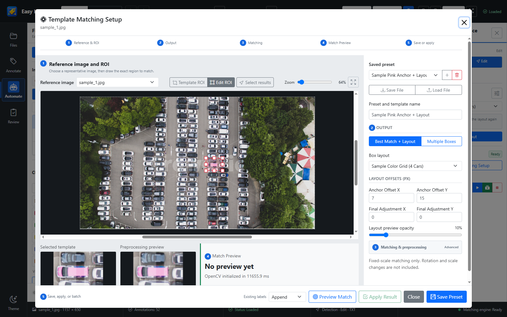

DETECTION · TEMPLATE AUTOMATION
기준 영역 하나로 반복 라벨의 초안을 생성
Template Matching으로 기준 위치를 찾고, 저장된 Layout을 배치한 뒤 사람이 최종 검수합니다.

실제 프로그램 UI · 화면의 차량 이미지는 기능 설명용 내장 데모
1ROI 지정
대표 이미지에서 찾을 기준 영역을 선택합니다.
2매칭 + Layout
고정 배율의 반복 패턴을 찾고 클래스·상대 위치를 함께 배치합니다.
3미리보기·검수
경계, 인접 구조 분리, 클래스 일관성을 확인한 뒤 적용합니다.
활용 포인트
현재 이미지 적용과 Batch 실행을 지원하며, 결과는 Detection 박스로 편집할 수 있습니다.
현재 이미지 적용과 Batch 실행을 지원하며, 결과는 Detection 박스로 편집할 수 있습니다.
YOLO TXTPresetLayoutBatch